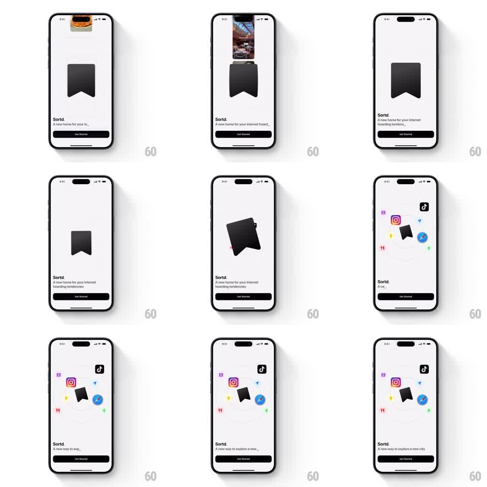

Media
Frame-by-frame

Rebuild this animation 1:1: Sortd's intro - floating content cards get vacuumed into the bookmark logo, the logo tumbles, then app icons settle into orbit around it while the tagline types.

Rebuild this animation 1:1: Sortd's intro - floating content cards get vacuumed into the bookmark logo, the logo tumbles, then app icons settle into orbit around it while the tagline types. ## Integration Integration: stack-agnostic spec - springs given as stiffness/damping, timed motions as duration + curve; map every value to your framework and animation library of choice. ## Scene Light intro screen: "Sortd." wordmark, a typing tagline, a Get Started button, and a center stage where the bookmark logo plays out the sequence. ## Motion spec Pattern: vacuum gather into orbit, ~5s sequence. - Content cards (photos, pages) hover near the stage top, then get sucked one by one into the bookmark's top slit: each accelerates toward it, shrinking and tilting as it vanishes (300ms, ease-in). - After the last card, the bookmark tumbles forward once (360deg, 600ms, spring stiffness 200 damping 14) and lands with a small bounce. - App icons (social, browser, messaging) pop in around the logo (spring stiffness 320 damping 15, 70ms stagger) and settle onto a circular orbit, drifting slowly (~12s per revolution) with a +-4px bob. - Meanwhile the tagline types itself character by character (see typewriter pattern). ## Calibration - The vacuum is an acceleration, not a constant glide - cards must visibly speed up as they fall in. - The tumble is one full rotation, then stillness; repeated spinning reads as a loader. ## Reduced motion Cards fade into the logo; icons fade into orbit positions; tagline sets instantly. ## Don't miss - Icons orbit at different radii but a shared angular speed, so the constellation holds its shape. - The bookmark stays the visual center; the orbit drifts around it, never through it.